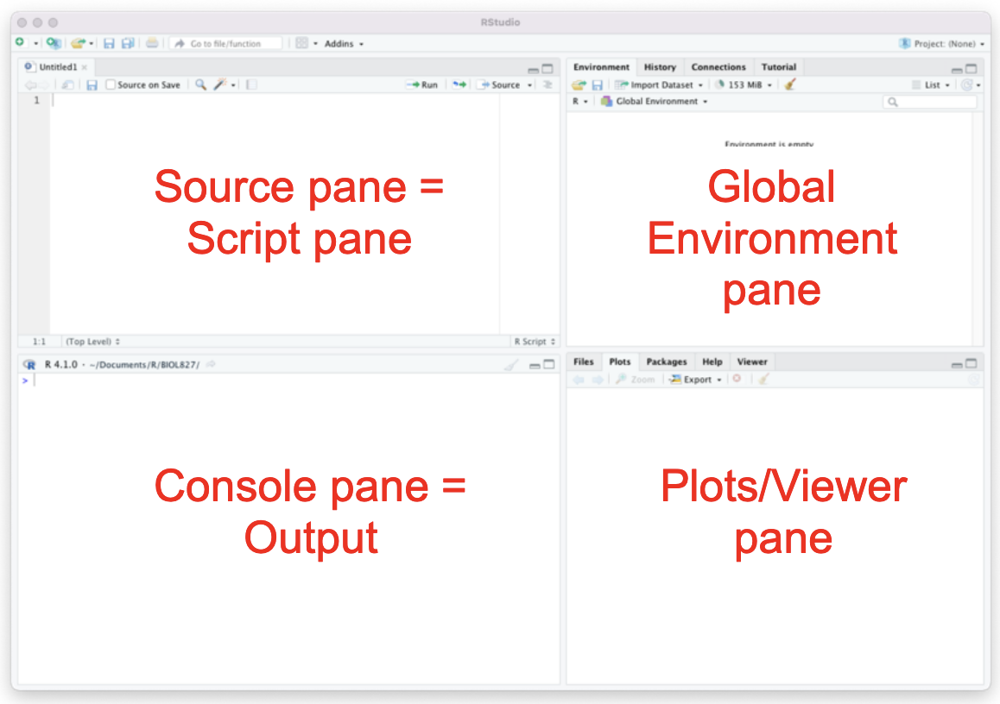
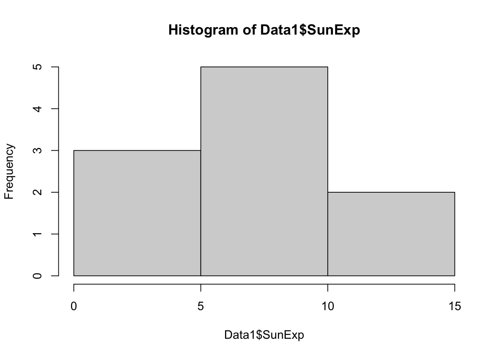

# Linux filepath
"~/Downloads/"
# Mac filepath
"~/Downloads/"
# Windows filepath
"C:\\Users\\[YOUR USER NAME]\\Downloads"1 Module 1
2 Learning objectives:
To reinforce Module 1 learning objectives and gain familiarity with the R statistical framework by using RStudio to:
Set a working directory
Import a dataset
Subset dataframes
Create and evaluate a frequency histogram
3 Before beginning the walkthrough
3.1 Installing R and RStudio
If you have not already done so, install both of the following free software programs on your computer before beginning the problem set. If you are using a Mac OS, you may be prompted to also download and install XQuartz (also free).
R – behind-the-scenes statistical brain - download from R directly
RStudio Desktop - software we’ll use to run R - download from Posit
On your computer, create a folder dedicated to work done in R and that you will be able to use all semester. Note the file path to this folder, you will need it in this problem set. Please make sure that this folder is in your UNK OneDrive - this will back up your data in case anything happens, and make it easier to share files with professors and other students.
- A filepath is like an address your computer uses to organize and find all the information stored on your hard drive. Filepaths are defined within R to find where files are stored on your computer. Some filepaths will include
~which refers to the “base directory” or “default directory” on a machine (for Linux-based operating systems). Examples of filepaths follow for the defaultDownloadsfolder on a machine:
3.2 Important notes
3.2.1 Notes on formatting
Throughout these instruction documents, different formats will be used to denote what type of object or data we are talking about. For example, programs like R will be italicized, and things related to actual code or coding objects will be formatted like code. For example, if a dataset is talking about the number of birds and it has a column called “num_birds”, then I will make this clear by formatting it as num_birds. If we are talking about the mean of a dataset, I will use “mean”, but if I’m talking about the command it will be formatted as “mean”.
3.2.2 Tab completing
RStudio allows you to do “tab completion”. Tab completion is a method that helps prevent you from making mistakes, especially as related to formatting or spelling. For example, if I hit one quote within a coding region in R, RStudio will automatically complete the quotes and place the cursor in the middle. (This is also true for parentheses, brackets, etc.) Quotes, in R, indicates that you will be putting in a filepath. Thus, if I type "~/Dow" and hit tab, my computer will autocomplete to "~/Downloads/".
3.2.3 File naming
It is often common for folks to use spaces in their file names, like bird data.csv. However, different coding languages, such as Bash and Python, see spaces as a break between commands. For example, where R might see bird data.csv as a single file name, Bash would interpret this as perform the command bird on the object data.csv. Thus, it is always better to use underscores or dashes instead, such as bird_data.csv.
3.2.4 Taking notes in R
When writing code, it is important to take notes and document each step of what you are doing. In R, anything written after a # character is ignored. Thus, anything written after a # can be used as notes. Compare the following outputs:
mean(1:10)[1] 5.5# mean(1:10)As we can see, the first format returned a value - the mean - whereas the second example did not run. Thus, we can annotate our code like so:
# calculate the mean
mean(1:10)[1] 5.5If you want to write a lot of notes, enter #' before typing notes. Every time you hit enter, the next line will start with #'.
3.3 Getting help inside R
Every function loaded into R has a documentation or help page. This is accessible within R by typing the function preceded by ?. For example, if I am not sure what the mean function does or how to use it, I would type ?mean, as shown below:
?meanThis will return a window such as the following in the bottom right (plot) pane of RStudio. This is the R documentation page. You can scroll through to see argument explanations, examples of use, and information on how to cite that particular command.
You can also get citations as follows:
citation()To cite R in publications use:
R Core Team (2024). _R: A Language and Environment for Statistical
Computing_. R Foundation for Statistical Computing, Vienna, Austria.
<https://www.R-project.org/>.
A BibTeX entry for LaTeX users is
@Manual{,
title = {R: A Language and Environment for Statistical Computing},
author = {{R Core Team}},
organization = {R Foundation for Statistical Computing},
address = {Vienna, Austria},
year = {2024},
url = {https://www.R-project.org/},
}
We have invested a lot of time and effort in creating R, please cite it
when using it for data analysis. See also 'citation("pkgname")' for
citing R packages.4 Datasets:
We will be working with two different datasets as part of the Module 1: Introduction to R lecture and this Problem Set Assignment. These are fictional data associated with hypothetical studies created to illustrate key points. Look at both datasets, available as comma-separated values (.csv) files in Canvas.
4.1 Dataset 1
A researcher was interested in the relationship between whether more hours in direct sunlight led to more freckles on the back of hands in humans. They found 10 people who volunteered to participate. Each participant (Subject) tracked how much sun exposure they had over the course of the summer (SunExp). At the end of the summer, they reported the total number of freckles on the backs of both hands (Freckles). Note that some of these filenames have spaces, as from previous classes; we are working on reformatting filenames to fit the best practices described above.
BIOL827.01_Problem_Set_Data_1.csv
4.2 Dataset 2
After analyzing dataset 1, the researcher decided to conduct a follow-up study. This time they found 26 volunteers and asked each volunteer to sit in the sun for a specific number of hours every day for the entire summer. Thirteen participants were assigned to each sun exposure regime (SunExp): 1 or 3 hours per day (2 regimes x 13 participants per regime = 36 participants). At the end of the summer, the researcher counted the total number of freckles (Freckles) on the backs of both hands of each participant (Subject).
BIOL827.01_Problem_Set_Data_2.csv
5 Procedure:
- Download both dataset files (
*.csv) from Canvas. Save them to your R folder on your computer.
- Watch Module 1: Introduction to R lecture posted on Canvas. There is also a Module 1 tutorial video that walks through the procedures below.
5.1 Section A. Set a working directory
The working directory tells RStudio where to look for external files and to save files. This eliminates the need to code the entire file path each time a dataset is imported or an R file is saved.
- Open R, you should have 4 panes.
The upper-left pane is the “Source” pane should be blank with ‘
Untitled1’ at the top. This is where you will enter code.- If you do not have this pane, you can open it by going to:
File > New File > R Script.
- If you do not have this pane, you can open it by going to:
The “Console” pane (usually bottom left) is where the code and its associated output will be printed after being Run. (Running code is the same as executing the code and having it perform the specified actions).
The “Global Environment” pane (usually upper right) lists the objects in R’s working memory. Any time you import a dataset or write output to an object, it should be listed here.
The “Plots/Viewer” pane (usually bottom right) is where any graphs and help windows will be displayed.

- In the source pane, type the command
setwd().
IMPORTANT NOTES:
R coding is case sensitive! Use tab completion!
Each new command must begin on a new line.
A single command can run onto multiple lines.
## EXAMPLES
## INCORRECT: two commands on single line
mean(1:10) var(1:10)
## CORRECT: Each command on a line
mean(1:10)
var(1:10)
## CORRECT: One command across multiple lines
mean(1,2,3,4,5,
6,7,8,9,10)- Inside the parentheses, type the file path to your R folder in quotation marks.
Format of the filepath is operating system dependent. Mac and Linux use
/to separate portions of the filepath and Windows often uses\\. If you are having issues, or two back-slashes (\\) in the path. If one doesn’t work, try the other. If both fail, follow these instructions to create a filepath on your computer.R reads a single backslash (
\) as an “escape” command, so you will receive an error. Escape commands are used frequently in coding languages; for example,&may indicate a joining of two objects but\&denotes the character “&”.Remember, use Tab Complete! This will put the correct format for you.
# Setting the working directory
# Format is shown for Mac
setwd("~/Documents/BIOL827/")- Click “Run”, or place your cursor on the line and click
ctrl+enter(Windows / Linux) orcmd+enter(Mac) to make the line run
- To run only a portion of the code, highlight that section of code then Run.
- We can also save the working directory as an object. We can do this as follows:
filepath <- "~/Desktop/BIOL827/"
filepath[1] "~/Desktop/BIOL827/"- After running both lines of code, you will see that
filepathwill appear in the top right pane. This is now in our memory! Every time we type the wordfilepathand have it run, it will print out"~/Documents/BIOL827/"or whatever the equivalent is on your machine.
- See what is in the
filepathfolder. If you have saved both the datasets for this class into that folder, it should look similar to the following:
list.files(filepath)[1] "BIOL827.01_Problem_Set_Data_1.csv" "BIOL827.01_Problem_Set_Data_2.csv"- We can see a list of all files at the address designated by
filepath. Usingfilepathensures that our code will always work, and that we are not reliant on being in the correct working directory withsetwd. This will become useful when usingrmarkdown.
5.2 Section B. Import a dataset
- First, we need to tell RStudio a short name for the dataset we are importing. This is called an object name, such as was shown for
filepathin step 9.
This object name will be used whenever we want R to do something with this dataset. Object names can be anything you choose, but should be short, descriptive, and a single string (no_spaces) of characters. The object name cannot begin with a numeral.
- I called it object “
Data1”. If you used a different name, be sure to use the name you used in place ofData1throughout the instructions.
- I called it object “
In R, a “dataframe” is a set of variables arranged in columns with each unique variable in a single column and information associated with a sample unit in a single row. A
data.frameis also a very specific object type in R that can be passed through to certain commands. The dataset we are importing is considered adata.frame.
- Next, type
<-. In R coding, these characters (<-) mean “is created from”. I also remember as “put this value into this thing”. - Now, we need to tell RStudio what data we want to import. Because the data is in a comma-separated values (
*.csv) format, we need to use the functionread.csv. Syntax for this code is:read.csv("filename.csv", header = TRUE).
R will look in the working directory to find the filename indicated. If the working directory has not been set as directed in Section A. Set a working directory, you will need to include the full filepath with the filename in quotations. There are several ways to do this, as shown below.
The option “
header = TRUE” tells R that the first row in the*.csvfile contains the name for each variable in the dataset.Don’t forget to use tab complete!
Windows computers: If you are using RStudio on a Windows operating system, you may need to include another argument to ensure the *.csv file is read into RStudio correctly:
read.csv("filename.csv", header = TRUE, fileEncoding = "UTF-8-BOM")
- Highlight and run the code, or place your cursor on the line and hit
ctrl+enterorcmd+enter. This code is telling RStudio to import data from the indicated*.csvfile into RStudio using the first row of that file to name each variable (= column). RStudio will store the data as an object calledData1.
- Whenever we want to do something with this data, we will need to tell RStudio to use
Data1.
## Steps 10 through 13 shown here
Data1 <- read.csv("~/Desktop/BIOL827/BIOL827.01_Problem_Set_Data_1.csv")
# view first few rows
head(Data1) Subject SunExp Freckles
1 James 4.6000000 4
2 Keiko 8.5166667 20
3 Mauricio 14.3500000 3
4 Sharon 6.4166667 9
5 Sonia 8.9500000 13
6 Apoorva 0.1333333 12# read the file, but use filepath
# use "paste0" to combine things
# paste0 means "combine, no spaces"
# paste sometimes works with tab complete - not always!
Data1 <- read.csv(paste0(filepath,"BIOL827.01_Problem_Set_Data_1.csv"))
# view first few rows
head(Data1) Subject SunExp Freckles
1 James 4.6000000 4
2 Keiko 8.5166667 20
3 Mauricio 14.3500000 3
4 Sharon 6.4166667 9
5 Sonia 8.9500000 13
6 Apoorva 0.1333333 12We can also view what kind of data this is in R:
# str = structure
str(Data1)'data.frame': 10 obs. of 3 variables:
$ Subject : chr "James" "Keiko" "Mauricio" "Sharon" ...
$ SunExp : num 4.6 8.52 14.35 6.42 8.95 ...
$ Freckles: int 4 20 3 9 13 12 14 12 7 6As mentioned above, R has created a data.frame with these data with three columns imported: Subject, SunExp, and Freckles.
- View the imported dataset in RStudio by clicking on the object name from the list in the environment panel.
This will show the format and specific setup of the object in your R environment.
Double-clicking this object should open a new tab with a spreadsheet view of the dataset.
5.3 Section C. Subset a dataframe
When working in R, we often want to analyze a subset of observations (= rows) in the data.frame. There are many ways to do this, for now we will use the subset() function to create subsets as new objects. The subset function is formatted like so:
New.dataframe <- subset(dataframe, rows to keep, columns to keep)
Rows should be identified using criteria specified by a logical argument.
The logical argument should tell R which variable contains the criteria and values to keep. See examples in Section C.2. Subset observations only.
If criteria are only given for rows, a comma is not necessary after the criteria.
This will return all variables in the new subset. Variable names must be in quotations and exactly match the spelling and capitalization of the name as given in the dataframe. Use tab complete when possible, some functions allow for this within the function.
- More than one column can be selected using
select=and thelistfunctionc("variable 1", "variable 2").cstands for “concatenate” to combine things into a single object.
# concatenation examples
example_1 <- c("a","b")
example_2 <- c(5,7)
example_1[1] "a" "b"example_2[1] 5 7- If only subsetting columns and keeping all rows of data, two commas should be between the full
data.framename and column variable names so that the row portion of the function is empty. This tells R to keep all rows.
5.3.0.1 Anatomy of an R command
There are three basic parts to an R command.
- Object: set of information (value, variable, dataset, model, etc.) R can work with
<-: separates the object and function; means “is created from”.- Function: tells R to do something.
Command:
Data1 <- read.csv("BIOL827.01_Problem_Set_Data_1.csv", header = TRUE)
How R reads the command:
Create a new object called Data1 by importing the .csv file into R. Use the first row of the .csv file to give a variable name to each column.
5.3.1 Section C.1. Subset by columns
Create a new dataframe object containing all observations of the sun exposure variable (SunExp) only from existing dataframe Data1.
- Begin the command by providing a name of your choosing for the new dataframe to be created by subsetting
Data1. For example,SunExp.Data1since the new variable will contain only the sun exposure variable. - On the same line, enter
SunExp.Data1 <- subset(Data1, , "SunExp")
subset(): this calls thesubsetfunction; all arguments related to how we want to subset the dataframe must be made inside these parentheses.Data1: this is the name of the existing dataframe with information from which the newdata.framewill be made.Two commas (with or without a space between): indicates we are not subsetting by rows. That is, all rows of data will be in our new
data.frame.SunExp: this is the name of the variable inData1that we want to copy into the newdata.frame.
# subset data frame
SunExp.Data1 <- subset(Data1, , "SunExp")
# view first few rows
head(SunExp.Data1) SunExp
1 4.6000000
2 8.5166667
3 14.3500000
4 6.4166667
5 8.9500000
6 0.1333333Another way to write this for annotation would be:
# subset data frame
SunExp.Data1 <- subset(Data1, # data frame
, # row filter condition
"SunExp") # column filter condition
# view first few rows
head(SunExp.Data1) SunExp
1 4.6000000
2 8.5166667
3 14.3500000
4 6.4166667
5 8.9500000
6 0.1333333- Run the above
subsetcommand. - To view contents of the new
data.framein the console panel, highlight or type the new dataframe name and click Run.
- Quickly and easily highlight a portion of a line by double-clicking on a word. Double clicking will highlight the object or command name only, which you can then run by clicking “Run” or using
ctrl+enterorcmd+enter.
5.3.2 Section C.2. Subset observations only
Create a different new data.frame from Data1. This new data.frame should contain all variables but only for participants with 20 or more freckles. Selecting a subset of rows requires a logical statement (i.e., criteria) to let R know which rows to copy to the new data.frame.
- Begin the command by providing an object name of your choosing for the new
data.frame. For example,Freck20.Datasince we want data from participants with 20 or more freckles in the newdata.frame.
- Remember, object names cannot have spaces nor begin with a numeral.
- Enter the function
<- subset(Data1, Freckles >= 20)after the object name.
subset(): this calls the subset function; all arguments related to how we want to subset thedata.framemust be made inside these parentheses.Data1: this is the name of the existingdata.framewith information from which the newdata.framewill be made.Freckles >= 20: this is a logical argument. It tells R to look in variableFrecklesand copy only rows for which the value ofFrecklesis 20 or greater to the newdata.frame.
# subset by rows
# col argument not needed!
Freck20.Data <- subset(Data1, Freckles >= 20)
Freck20.Data Subject SunExp Freckles
2 Keiko 8.516667 20- Highlight and run the code, as above.
- To view contents of this new dataframe in the console panel, highlight or type the new
data.framename and click Run.
5.3.3 Section C.3. Subset by both variables and observations
Create a third new dataframe from Data1. This new dataframe should contain only the Subject and SunExp variables and only for participants with 20 or more freckles.
- Begin the command by providing an object name for the new dataframe.
- On the same line, enter:
<-subset(Data1, Freckles >= 20, select = c("Subject", "SunExp")).
subset(),Data1, andFreckles >= 20are the same as described in Section C.2. Subset observations only.select = c("Subject","SunExp"): this uses the list functionc()to select the two variables,SubjectandSunExp, that we want to copy into the new dataframe. Be sure the variable names are in quotations and spelled in the same case as in theData1dataframe.
- Highlight and run the command.
Freck.var.obs.filter <- subset(Data1, Freckles >= 20,
select = c("Subject", "SunExp"))- To view contents of the new dataframe in the console panel, highlight or type the new dataframe name and click Run.
Freck.var.obs.filter Subject SunExp
2 Keiko 8.516667- Compare the dataframes created in Section C.2. Subset observations only. and Section C.3. Subset by both variables and observations. Notice that the
Frecklesvariable is in dataframeFreck20.Data1created in Section C.2. Subset observations only, but not in dataframeSunExp.Freck20.Data1created in Section C.3. Subset by both variables and observations because it was not included in the select argument in Step 23.
28. Save your R script file before quitting by clicking the disk icon or by selecting File > Save from the menu at the top of the screen.
5.4 Section D. Create frequency histograms
Create a frequency histogram for sun exposure and freckle variables from Data1 to evaluate the frequency distribution for each variable. Here, we will use the hist() function and its default settings to get familiar with the structure and content of histograms.
- Enter the function:
hist(Data1$SunExp). This tells R to create a histogram from observations of theSunExpvariable within theData1dataframe.
hist(): calls the histogram plotting function; all arguments must be made inside these parentheses.
Data1: this is the name of the dataframe from which the histogram will be made.$: separates an object name from the variable name. The named variable must exist within the named object or you will receive an error from RStudio.SunExp: identifies the variable inData1to be used for the histogram. A variable with this name must exist within the dataframe identified.
- Highlight and run the code.
hist(Data1$SunExp)
- Repeat step 28 replacing
SunExpwithFrecklesto create a histogram for theFrecklesvariable withinData1.
Basic operators in R
+add^or**exponentiation-subtract<Less than*multiply<=Less than or equal to/divide>Greater than==equals>=Greater than or equal to!=does not equalx|yxory*see note below!xis notxx&yxandy*see note below*x|yandx&y:xandycan represent expressions. For example,SunExp == 1 & Freckles >= 20could be used to select only those observations meeting both criteria.
- Highlight and run the code.
- Both histograms should now be available in the plots panel (lower right).
To navigate between histograms for
FrecklesandSunExp, click the arrows at the top of the plots panel.To save graphs as an image file or copy them to paste into a Canvas quiz response, click Export (Figure 9, red arrow) and follow the corresponding prompts.
- Self-assessment. Compare information displayed in each frequency histogram to the raw data for each variable in the Data1 dataframe (or by opening the
.csvfile outside of RStudio).
Looking at the sun exposure variable in the dataframe, how many values between 0 and 5 does it contain?
Now look at the histogram for sun exposure, what frequency is graphed for the 0-5 bin? How does they compare? Hint: they should be the same.
6 Problem Set Assignment Directions and Questions:
6.1 1. (2 points) In Dataset 1, identify which variable is the response variable and which isthe explanatory variable as well as what type of data each represents (categoricalnominal, categorical ordinal, numeric discrete, numeric continuous). In Canvas, therewill be dropdowns for you to use to identify the type of variable and the type of dataassociated with each of the following.
6.1.1 a. Sun exposure (SunExp)?
6.1.2 b. Freckles (Freckles)?
6.2 2. (2 points) In Dataset 2, identify which variable is the response variable and which is the explanatory variable as well as what type of data each represents (categorical nominal, categorical ordinal, numeric discrete, numeric continuous). In Canvas, there will be dropdowns for you to use to identify the type of variable and the type of data associated with each of the following.
6.2.1 a. Sun exposure (SunExp)?
6.2.2 b. Freckles (Freckles)?
6.3 3. (2 points) Based on descriptions of the studies associated with each dataset, answer the following questions. In Canvas, there will be dropdowns for you to use to identify the type of variable and the type of data associated with each of the following.
6.3.1 a. Was Dataset 1 associated with an observational or experimental study?
6.3.2 b. Was Dataset 2 associated with an observational or experimental study?
6.4 4. (6 points) Using Dataset 2, create one histogram of freckles data for participants exposed to 1 hour of sun daily and another for freckles of participants exposed to 3 hours of sun daily. You will be asked to paste screenshots or insert images of both histograms in Canvas.
6.4.1 a. To do this, you will first need to create a subset of each SunExp sample (1 hour subset, 3 hour subset). Then, create a histogram for each individually.
6.5 5. (4 points) Describe the distribution of each in terms of skewness (positive, negative, none/normal, or unclear) and kurtosis (positive/leptokurtic, negative/platykurtic, or neutral/mesokurtic, or unclear)? In Canvas, there will be dropdowns for you to use to identify the type of variable and the type of data associated with each of the following.
6.6 6. For the possibility of partial credit, you will be able to upload a document showing your work (e.g., R code and output).
Submitting your work for the Modules 1 and 2 Problem Set Assignment: Copy-paste or type your responses or graphs into the corresponding question in the Problem Set Assignment page (a Canvas ‘quiz’). Questions in Canvas may be worded slightly differently than here, usually for brevity, but with the same meaning. If there is a discrepancy in what is being asked between this document and the question form in Canvas, answer based on what is asked in this document. Also, please let me know as soon as possible so I can get it fixed.
Additional resources for R:
If you get stuck performing tasks in R, please reach out to me. There is also a wealth of information, pointers, and discussion boards about R language and RStudio online. Performing an internet search often provides insight and may offer more immediate assistance. Here are a few (of many!) websites that tend to be reliable and helpful:
RDocumentation
R-bloggers
Stackoverflow
STHDA.com
GitHub
The following sites are also sometimes useful:
ChatGPT
Reddit